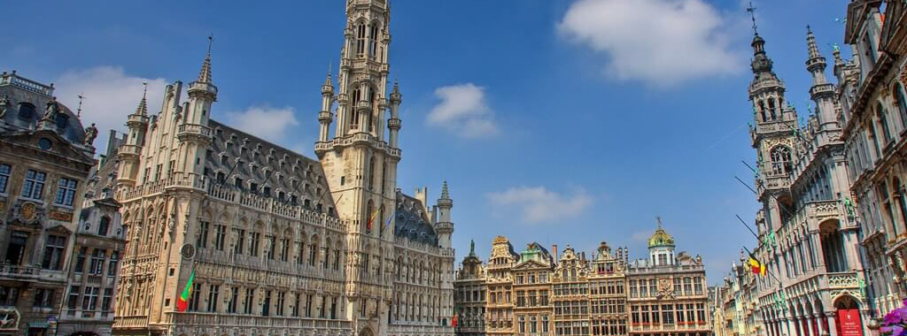

Бельгия – это прекрасная архитектура. Например, на юге Валлонии Вы можете посетить прекрасные холмы Арденн, восхитительные замки замки и города Намюр, Льеж, и Турнай. Также увидеть прекрасные Арденнские горы. Для романтических свиданий можно съездить в романтический круиз по каналам Брюгге. Для почитателей истории стоит посетить Северную Фландрию, которая гордится своими средневековыми городами Антверпеном и Гентом с множеством замков. Для любителей морских путешествий рекомендуем посетить Фландрию, где располагаются прекрасные равнины над уровнем моря. Также стоит отметить местечко Спа, которое, прежде всего, славится лечебными свойствами термических вод. Само место расположено в лесах Арденн.
